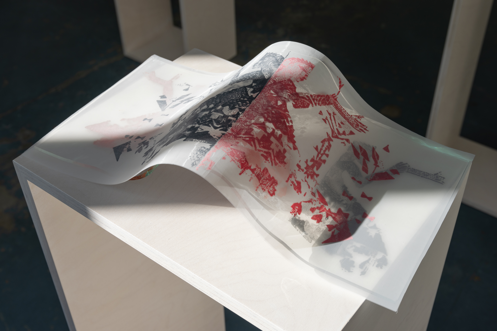
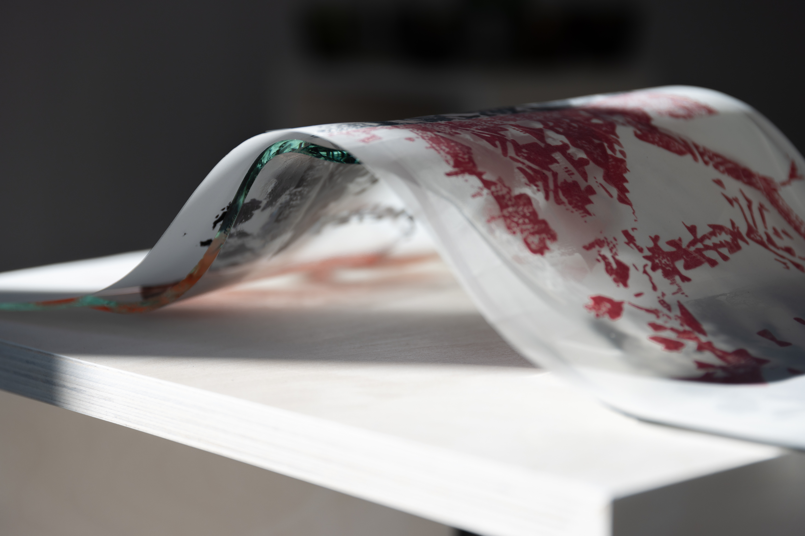
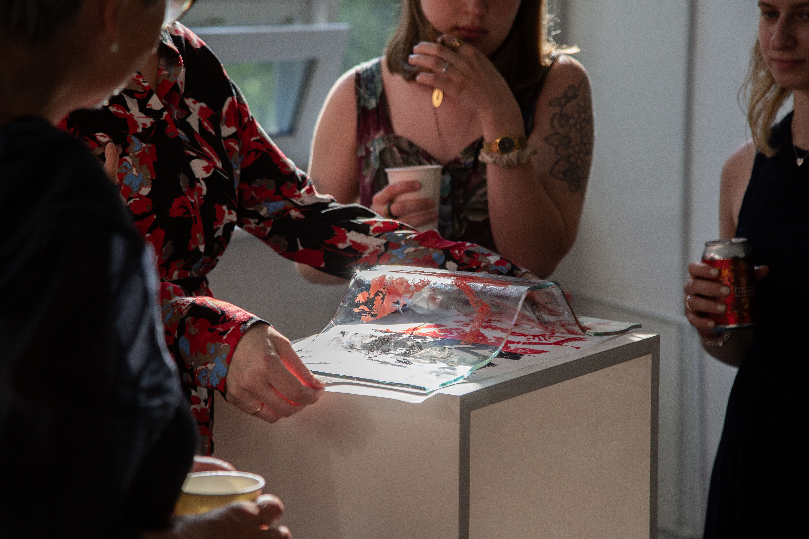
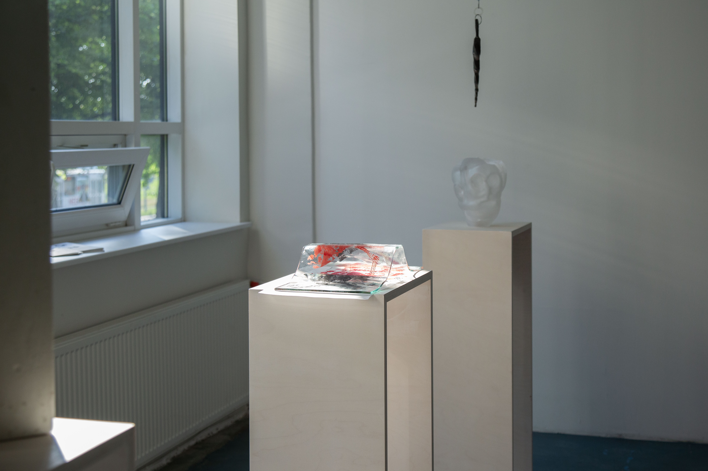
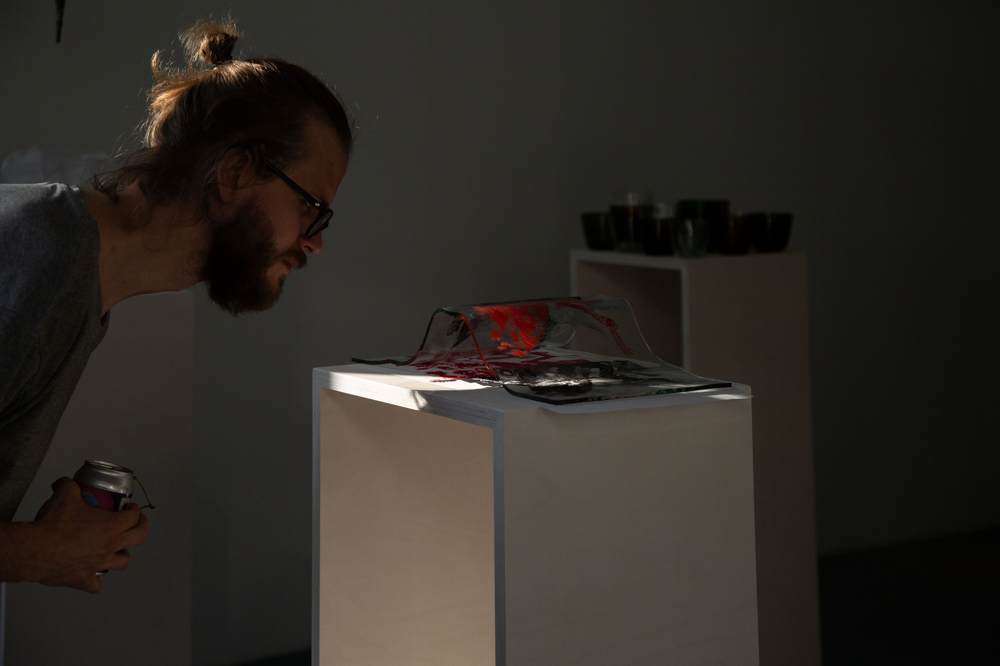
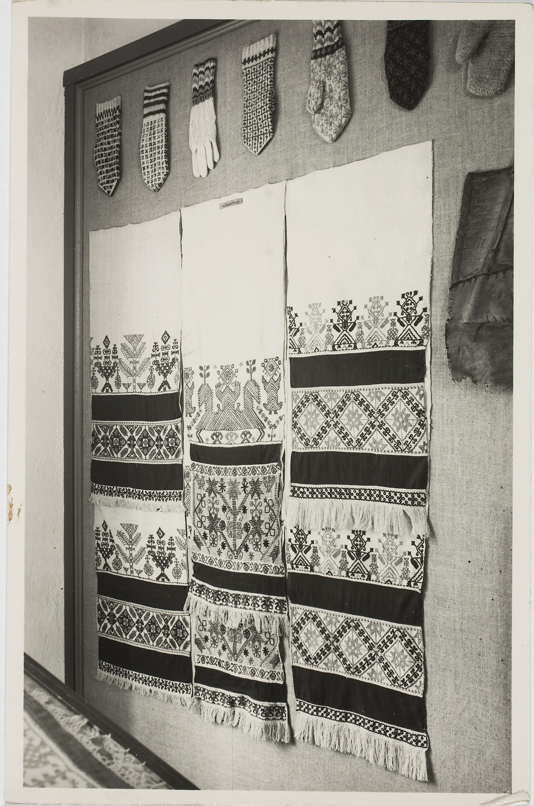
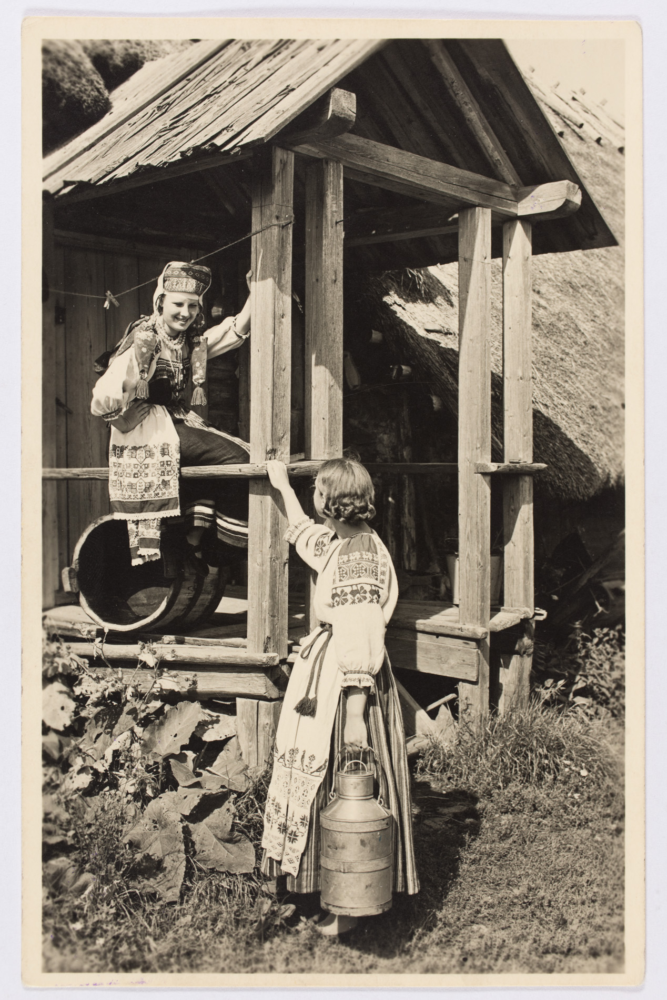
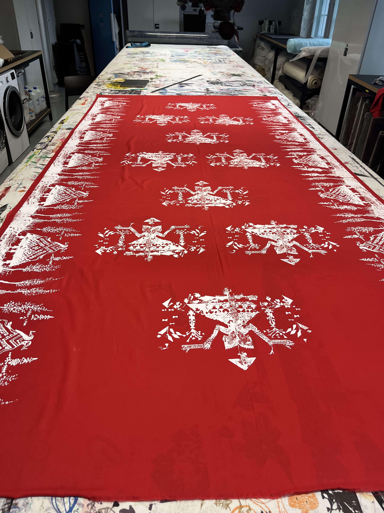
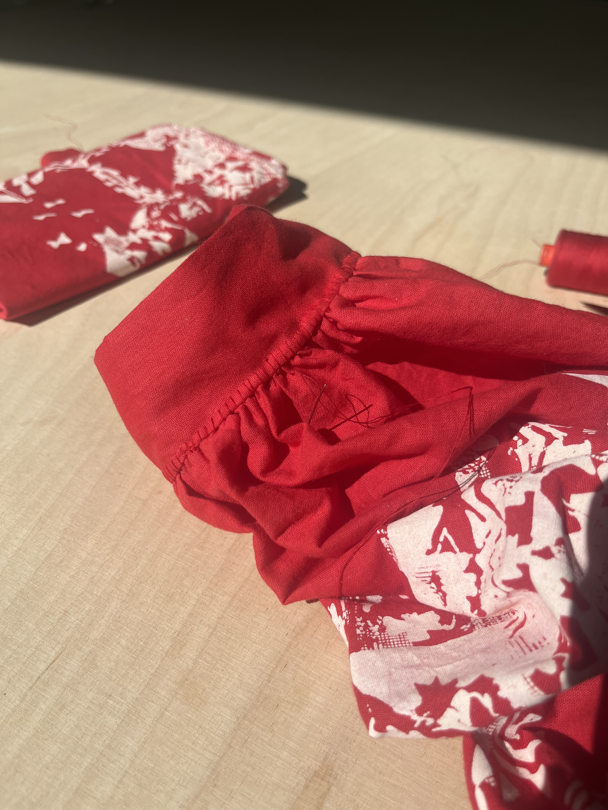
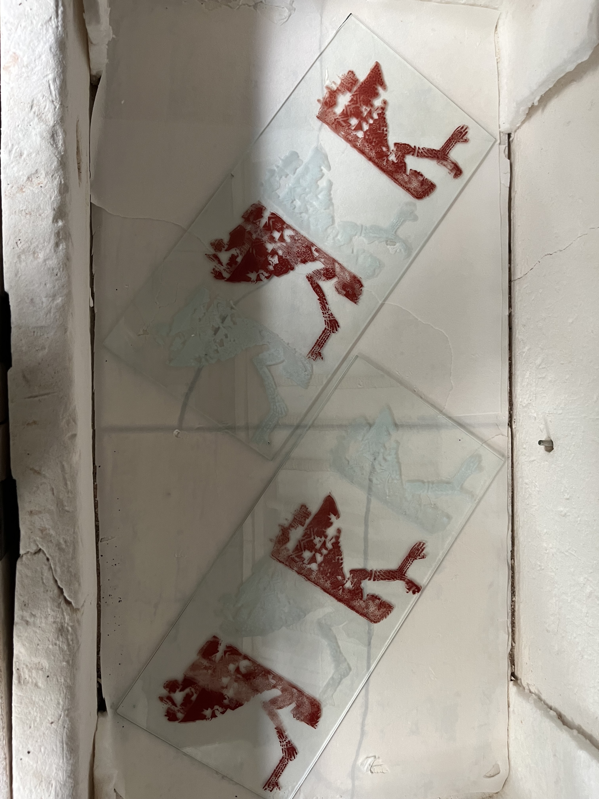

Sky Maiden
Ese või asi/Objects or Things exhibition, Krulli Kvartal
The two-headed woman motif in this piece reinterprets a traditional Izhorian embroidery element, symbolising duality and balance. It draws from deep cultural roots to illustrate the intricate relationship between nature and human existence, embedding layers of memory and stories from indigenous populations that no longer exist.
From Disappearance to Reimagination: Crafting Heritage in a Vanishing World
Exhibition Views

Photo: Joosep Kivimäe

Photo: Joosep Kivimäe

Photo: Joosep Kivimäe

Photo: Joosep Kivimäe

Photo: Kulla Laas

Photo: Kulla Laas

Photo: Kulla Laas
Inspiration

Ingerian textiles. Photograph by Eduard Selleke, 1928. Estonian National Museum, ERM Fk 764:11.

Young women on a balcony, Ingria. Archival photograph. Estonian National Museum, ERM Fk 958:2.
Process

Silk print design

Silk print on fabric

Sewing

Silk print on glass in kiln